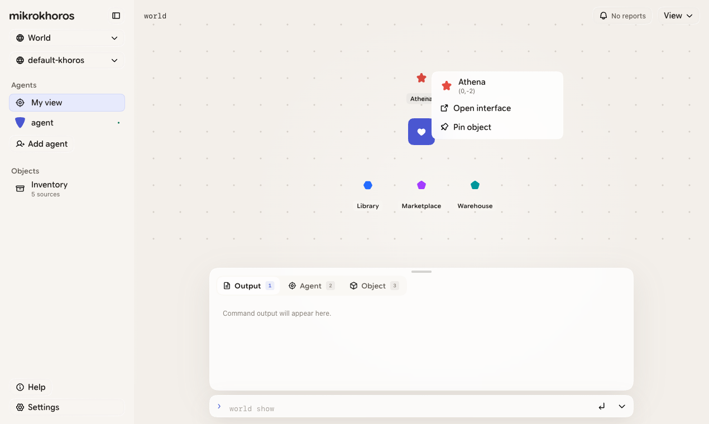

THE WORLD IS THE AUTHORITY
Agents act.
Worlds answer.
Each turn begins from authoritative object state and ends in a
validated, persistent transition.
-
01
Observe
Partial world context
-
02
Plan
One concrete next step
-
03
Act
Bounded object capabilities
-
04
Verify
Authoritative transition
-
05
Continue
Replay and adaptation
OBSERVATION → PLAN → BOUNDED ACTION → VERIFIED STATE → NEXT OBSERVATION
EVERY PERSISTENT CAPABILITY HAS AN OWNER
Objects are
the interface.
Reusable behavior becomes a concrete world object with its own
identity, state, placement, declared functions, and history.
-
01
Object SDK
APIs · schemas · contracts
-
02
Package
Versioned reusable behavior
-
03
Inventory
User-owned source
-
04
World object
Independent concrete instance
IDENTITY
STATE
LOCATION
AUTHORITY
LINEAGE
TWO HUMAN SURFACES
Full CLI.
Local Web.
The khoros executable owns both interfaces over the same runtime,
command engine, and persistent product state.
$ make install
$ khoros init
$ khoros web
macOS + LINUX QUICK START · WINDOWS VIA POWERSHELL

mikrokhoros Web · captured pre-release build
APACHE-2.0
Open source.
Free to use.
Build a local agent harness, create object packages, inspect the
runtime, and help shape the project in public.
SWIFT 6.1
macOS 13+
LINUX
WINDOWS